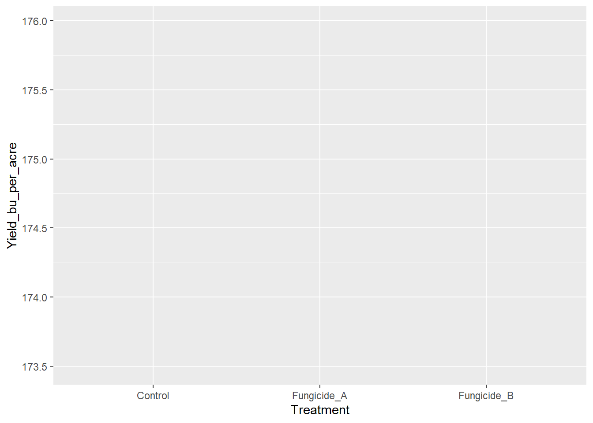
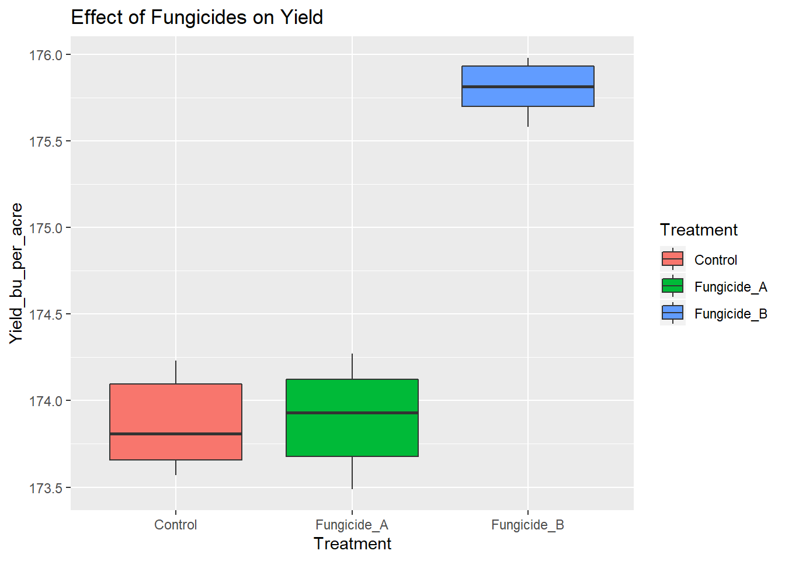

Untitled
Shankar K. Shakya
11/4/2019
Reading data file first
mydata <- read.csv("fungicide_dat.csv")
head(mydata)## Treatment Yield_bu_per_acre Severity
## 1 Control 173.82 5.5
## 2 Control 174.23 5.6
## 3 Control 173.57 5.4
## 4 Control 173.61 5.4
## 5 Control 174.19 5.6
## 6 Control 173.80 5.5How many rows and columns are in this dataset?
Convert bu/acre to kg/ha and add this as new column
This can be done by multiplying bu/acre with 62.77.
mydata$kg_ha <- mydata$Yield_bu_per_acre * 62.77
head(mydata)## Treatment Yield_bu_per_acre Severity kg_ha
## 1 Control 173.82 5.5 10910.68
## 2 Control 174.23 5.6 10936.42
## 3 Control 173.57 5.4 10894.99
## 4 Control 173.61 5.4 10897.50
## 5 Control 174.19 5.6 10933.91
## 6 Control 173.80 5.5 10909.43subset your data only to select your treament and kg_ha column
yield_kg_ha <- mydata[ , c(1,4)]
head(yield_kg_ha)## Treatment kg_ha
## 1 Control 10910.68
## 2 Control 10936.42
## 3 Control 10894.99
## 4 Control 10897.50
## 5 Control 10933.91
## 6 Control 10909.43Some statistical analysis
?aov## starting httpd help server ... donemyanova <- aov(formula = Yield_bu_per_acre ~ Treatment, data= mydata)
myanova## Call:
## aov(formula = Yield_bu_per_acre ~ Treatment, data = mydata)
##
## Terms:
## Treatment Residuals
## Sum of Squares 14.722711 0.992333
## Deg. of Freedom 2 15
##
## Residual standard error: 0.2572072
## Estimated effects may be unbalancedsummary(myanova)## Df Sum Sq Mean Sq F value Pr(>F)
## Treatment 2 14.723 7.361 111.3 1.01e-09 ***
## Residuals 15 0.992 0.066
## ---
## Signif. codes: 0 '***' 0.001 '**' 0.01 '*' 0.05 '.' 0.1 ' ' 1TukeyHSD(myanova) ## Tukey multiple comparisons of means
## 95% family-wise confidence level
##
## Fit: aov(formula = Yield_bu_per_acre ~ Treatment, data = mydata)
##
## $Treatment
## diff lwr upr p adj
## Fungicide_A-Control 0.030000 -0.3557208 0.4157208 0.977785
## Fungicide_B-Control 1.933333 1.5476125 2.3190542 0.000000
## Fungicide_B-Fungicide_A 1.903333 1.5176125 2.2890542 0.000000Please do similar analysis for severity to test for statistical significance
Now lets visualize our data
library(ggplot2)
yield.plot <- ggplot(data = mydata, aes(x = Treatment,
y = Yield_bu_per_acre))
yield.plot
yield.plot <- yield.plot + geom_boxplot()
yield.plotyield.plot <- yield.plot + geom_boxplot(fill = "orange")
yield.plotyield.plot <- yield.plot + geom_boxplot(aes(fill = Treatment))
yield.plot
yield.plot <- yield.plot + ggtitle("Effect of Fungicides on Yield")
yield.plot
yield.plot <- yield.plot + xlab("Treatment Applied") + ylab("Yield")
yield.plotNow try plotting disease severity data
ggplot(mydata, aes(x = Treatment, y = Severity)) + geom_boxplot(aes(fill = Treatment))severity.plot <- ggplot(mydata, aes(x = Treatment, y = Severity)) + geom_boxplot(aes(fill = Treatment)) + theme_bw(base_size = 14) + theme(panel.grid = element_blank())
severity.plotlibrary(ggpubr)## Loading required package: magrittrseverity.plot <- severity.plot + stat_compare_means(method = "anova", label.y = 6.5)
severity.plotmy_comparisons <- list(c("Control", "Fungicide_A"),
c("Control", "Fungicide_B"),
c("Fungicide_A", "Fungicide_B"))
severity.plot <- severity.plot +
stat_compare_means(comparisons = my_comparisons,
label = "p.signif",
method = "t.test")
severity.plot
Now we are ready to save our plot
#tiff("myfungicidedata.tiff", width = 7, height = 7, res = 300, units = "in", compression = "zip")
severity.plot#dev.off()#tiff("myfungicidedata.tiff", width = 9, height = 7, res = 300, units = "in", compression = "zip")
severity.plot
#dev.off()